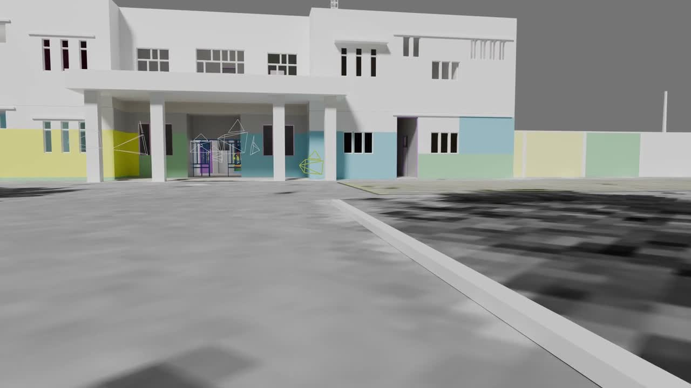

27°08'43"N 57°05'02"E · Minab, Hormozgan · Strike: Feb 28, 2026
🎙️
Click "🎧 Walk Inside & Listen" for the 8-stop narrated tour with in-room 3D videos & photos · Click any 3D portrait or rubble drawing on the walls to inspect
FEB 28, 2026 · MORNING BEFORE THE STRIKE · MINAB SCHOOL
VERIFIED ARCHIVE FOOTAGE
FORENSIC SPATIAL RECONSTRUCTION & LIVING ARCHIVE
Shajareh Tayyebeh Primary School
27°08′43″N 57°05′02″E · Minab, Hormozgan · February 28, 2026
Every photograph, child's voice, and eyewitness video inside these rooms was recorded in this school before and on the day of the strike.
SATURDAY · FEBRUARY 28, 2026 · 10:45 AM
First Cruise Missile Strike on Shajareh Tayyebeh School
IN REMEMBRANCE & PURSUIT OF JUSTICE
120 Schoolchildren & 26 Educators
Shajareh Tayyebeh Primary School · Minab · February 28, 2026
Stand beside their families and sign the Global Accountability Vow — peopleforpeace.live
01 / 08Morning Assembly in the Schoolyard
🎙️
Forensic Architecture Camera-Aligned Spot
Spot Title
Location Context

3D Camera-Matched Archive Frame
Detailed description.
Schoolchildren & Educators of This Wing (v3.0.0 Studio Portraits)Click any portrait for full profile
Classroom Drawings & Homework Pulled from This Wing's RubbleClick to inspect high-res scan
Spatial Verification & Legal Determination
Finding text here.
Global Accountability Petition & Civic Vow
The Minab Accountability Vow
November 20 World Children's Day · People for Peace & Justice ry
"Bearing witness to the verified forensic record of Shajareh Tayyebeh Primary School and the lives of the 120+ schoolchildren and 26 educators taken on February 28, 2026, I solemnly vow to stand ready and participate in every lawful civic, investigative, financial, and judicial endeavor to hold every person in the chain of command accountable for this atrocity."